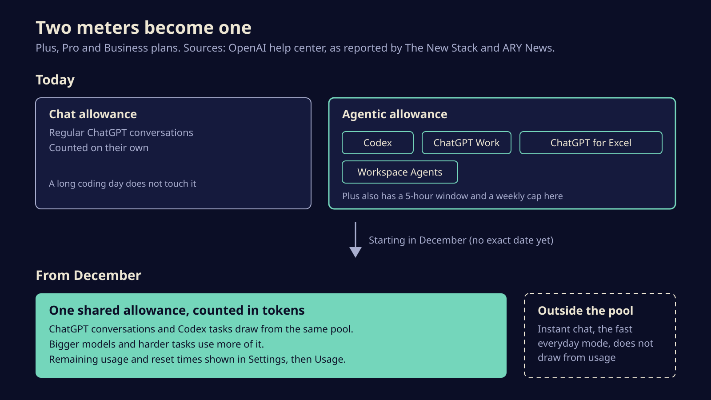
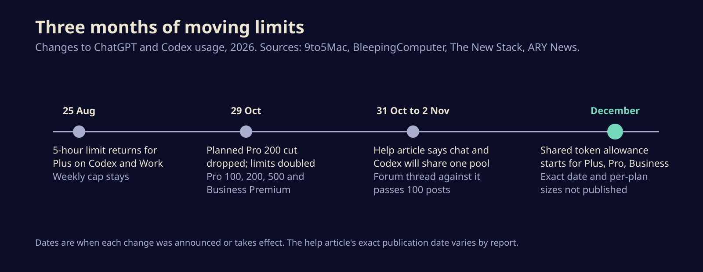

From December, your ChatGPT chats and Codex jobs will share one token budget
OpenAI says Plus, Pro and Business plans will draw ChatGPT and Codex from one token allowance starting in December. Here is what changes, what OpenAI has not said yet, and how to keep a heavy coding week from eating your chat.
OpenAI is folding its two meters into one. Starting in December, a ChatGPT conversation and a Codex coding task on a Plus, Pro or Business plan will draw from the same allowance, counted in tokens. If you lean on Codex all week, that now has a price in chat, and the other way round.
The change surfaced in a help center article OpenAI put up over the weekend, which ARY News says was updated on Monday, 2 November. It is short on numbers. There is no start date beyond December, no size for the new pool on any plan, and no comparison with what people get today.
What actually changes
Right now a paid ChatGPT account has two separate buckets. Ordinary chat has its own limits. A second, agentic allowance covers Codex, ChatGPT Work (the agent mode built on Codex that OpenAI launched in July), ChatGPT for Excel and Workspace Agents. On Plus, that agentic bucket also has a five-hour window on top of a weekly cap, which OpenAI brought back on 25 August after a few weeks without it.
From December, the wall between the buckets goes. OpenAI ties the move to bringing Work's features into the main ChatGPT app, which makes sense on its own terms: if the same window can answer a question and then go off and refactor your repo, a single meter is simpler to explain.

Three details matter more than the headline.
It is counted in tokens. Tokens are the chunks of text a model reads and writes. A long Codex session that reads a large codebase, runs tests and rewrites files burns far more of them than a quick question, and a bigger model burns more per task. Your allowance will drain at very different speeds depending on what you ask and which model answers.
Instant chat is exempt. The help article says plainly that "Instant chat will not draw from your usage." Instant is ChatGPT's fast everyday mode. Thinking models and agent work are what count.
You will be able to see it. ChatGPT will show the combined remaining usage and the reset times under Settings, then Usage. OpenAI has not said whether that page will break usage down by product or model.
What OpenAI has not said
The New Stack asked OpenAI when in December the change lands and whether the combined pool will be at least as large as the two buckets it replaces. The company declined to answer and pointed back to its recent limit increases and existing documentation. The help article says OpenAI expects most people to hit resets no more often than they do now. That is a forecast, not a number you can hold it to.
Also missing: how often the shared pool resets, whether Plus keeps its five-hour window, and what happens on the Free and Go plans, which the article does not cover.
Subscribers have noticed. A thread on OpenAI's developer forum asking the company to keep the two limits apart has passed 100 posts. The most practical request in it is for a live dashboard that shows consumption by product, model and task before the switch, so people can judge whether they are losing anything.

The timing is awkward
This arrives days after OpenAI backed down on a different limits fight. It had planned to cut the included allowance for existing $200 Pro subscribers after 29 October. Following a backlash, it dropped the cut that same day and, according to BleepingComputer, doubled usage limits for the Pro 100, 200 and 500 tiers and Business Premium, effective immediately. Tibo Sottiaux, who runs ChatGPT and Codex, announced both on X.
That doubling covered the agentic bucket. Once chat starts drawing from the same pool, some of that new headroom goes to conversations that used to be free of it. One forum poster made exactly that point: more capacity spread across more things is not obviously more capacity for you.
How to keep a coding week from eating your chat
Nothing changes until December, so there is time to get a baseline.
- Measure now. Note how close you get to your weekly Codex limit today. In the Codex CLI,
/statusshows what is left in the current session's limits. If you already run near the cap, you are the person this change squeezes. - Use Instant for quick questions. If it does not draw from usage, it is the right home for lookups, short rewrites and anything that does not need a reasoning model.
- Pick the model per task. Since bigger models cost more tokens, save the top model for the hard refactor and run routine edits on a lighter one.
- Know your escape hatches. At the limit you can wait for the reset, upgrade, or buy credits for supported features. Codex can also be signed in with an API key, which bills at standard API rates instead of drawing on the plan.
- Check Settings, then Usage, the first week of December. Compare a normal working day against your baseline before you decide whether your plan still fits.
OpenAI is not alone in merging the chat window and the agent. Anthropic folded Claude's chat and Cowork into a single interface in September. The tools are converging on one box that both talks and works, and the bill is following. Flat-rate prompting is turning into a metered utility, and the people who will feel it first are the developers who use these tools hardest.
Sources
- OpenAI Help Center, Understanding ChatGPT and Codex usage limits
- The New Stack, OpenAI's new shared usage limit pits ChatGPT against Codex
- ARY News, OpenAI to combine ChatGPT and Codex usage limits
- BleepingComputer, OpenAI doubles ChatGPT Pro usage limits after backlash over planned 50 percent cut
- 9to5Mac, OpenAI restores 5-hour Codex and Work limits for ChatGPT Plus users
Written with AI for Bade's Mod Shop. Facts are checked against the sources above on the day of publishing; if one is wrong, open an issue.